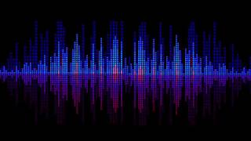

Сигнал - бұл әртүрлі байланыс құралдары немесе байланыс құралдары арқылы берілетін ақпараттық хабарлама немесе деректер. Сигнал дыбыс, жарық, электрлік импульс, радиотолқындар, таңбалар және т.б. сияқты әртүрлі формаларда ұсынылуы мүмкін. Сигналдар құрылғылар, адамдар немесе жүйелер арасында ақпаратты жіберу үшін пайдаланылады. Мысалы, телефон қоңырауы, радиосигнал, бағдаршам сигналдары және компьютерлік желілердегі цифрлық сигналдардың барлығы байланыс пен деректерді беру үшін қолданылатын сигналдардың мысалдары болып табылады. Сигнал 2-түрге бөлінеді:
Аналогтық сигнал
Цифрлық сигнал
Аналогтық сигнал
Аналогтық сигнал - бұл белгілі бір диапазонда кез келген мәнді қабылдай алатын, уақыт бойынша үздіксіз өзгеретін сигнал. Аналогтық сигнал үздіксіз және үздіксіз өзгеретін дыбыстық сигналдар, аналогтық бейне, электрлік кернеулер мен токтар сияқты үздіксіз шама ретінде ұсынылуы мүмкін.
Аналогтық сигналдардан айырмашылығы, цифрлық сигнал дискретті және әдетте екілік кодтар (0 және 1) түріндегі дискретті мәндердің соңғы санының комбинациясы болып табылады. Цифрлық сигналдар ақпаратты сақтаудың, берудің және өңдеудің заманауи технологияларында қолданылады, өйткені олардың тұрақтылығы жоғары және қателерді анықтау және түзету мүмкіндігі бар.
Аналогтық сигнал бейнесі
Аналогтық сигналдың мысалы
1. Аналогтық сигналдың мысалы ретінде дыбыстық толқынды білдіретін және уақыт өте келе үздіксіз өзгеретін дыбыстық сигналды айтуға болады. Сөйлегенде немесе музыка тыңдағанда дыбыс аналогтық сигнал ретінде қабылданады.

Дыбыстық толқын
2. Аналогтық сигналдар температураның, қысымның, жарықтың және басқалардың өзгеруі сияқты физикалық құбылыстарда да кездеседі.
Температура
Қысым
Жарық
Цифрлық сигнал
Цифрлық сигнал – дискретті сипатқа ие және белгілі бір дискретті мәндерді ғана қабылдай алатын сигнал. Әдетте, цифрлық сигнал екілік кодты пайдаланады, мұнда ол тек екі күйді қабылдай алады: 0 және 1.
Цифрлық сигналдың мысалы
1. Сандық теледидар: Қазіргі заманғы телехабар тарату бейнені, дыбысты және деректерді беру үшін сандық сигналдарды пайдаланады, нәтижесінде сурет пен дыбыс жоғарырақ болады.
Сандық теледидар
2. Цифрлық деректер: Электрондық мәтіндік құжаттар, кескіндер, бейнелер, аудио файлдар және цифрлық ақпараттың басқа түрлері цифрлық сигналдар болып табылады. Компьютердегі барлық деректер сандық түрде сақталады және беріледі.
Цифрлық деректер
Жоғарыда ақпарат жеткіліксіз болса, мына видео көр: